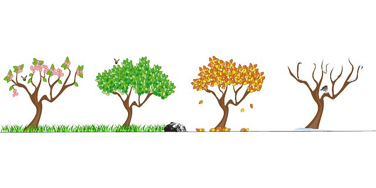
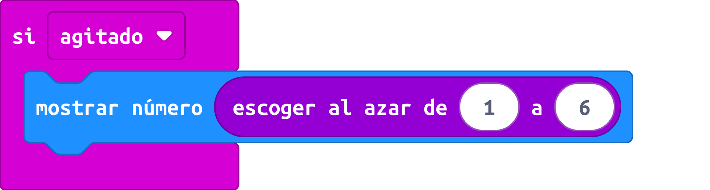

Te propongo realizar estos ejercicios para asegurarte de que recuerdas los conceptos básicos de la programación por bloques.
Te propongo realizar estos ejercicios para asegurarte de que recuerdas los conceptos básicos de la programación por bloques.
¿Recuerdas las órdenes lógicas? ¿los bucles? ¿Cuándo usar variables?
Te propongo realizar estos ejercicios para asegurarte de que recuerdas los conceptos básicos de la programación por bloques.
¿Recuerdas las órdenes lógicas? ¿los bucles? ¿Cuándo usar variables?
Vamos a repasar las principales funciones de entrada de las placas microbit diseñando un árbol de Navidad. Si ya ha pasado la navidad puedes hacer simplemente un árbol.
Hacer un dado virtual con la microbit es un ejercicio sencillo. Basta con generar un número aleatorio entre 1 y 6 y mostrarlo en pantalla. Pero no queremos que muestre número sino que se iluminen los puntos que representan el número. ¿Cómo lo harías? 
Tendrás que usar la función SI seis veces (o cinco con un sino). La otra instrucción es Mostrar LED
Obra publicada con Licencia Creative Commons Reconocimiento Compartir igual 4.0